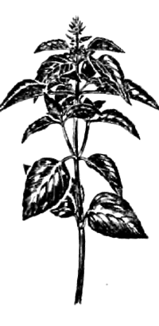

Базилик (Ocimum basilicum L.)
")
Синонимы: душки, душистые васильки, красные васильки, рейган (азербайдж.), раихон (узбек.), реан (арм.). Однолетнее травянистое растение семейства губоцветных.
Родина — Индия, Иран. Культивируется во всех странах Южной Европы, в СССР — на Северном Кавказе, в Крыму, Молдавии,
Закавказье и Средней Азии. В средней полосе прекрасно растет в открытом грунте, а зимой может возделываться в комнатных условия, в цветочных горшках. Листья и побеги базилика, собранные в начале цветения, используют в свежем и сухом виде, причем аромат у него при правильной сушке усиливается.
Сушат в тени и хранят в темной герметически закрытой стеклянной посуде, так как базилик чувствителен к влаге и свету и под воздействием их полностью теряют аромат.
Базилик широко применяется в западно— и южноевропейской, особенно французской и греческой, а также в закавказской кухнях. Свежая зелень идет в салаты, супы и холодные блюда. В остальных случаях чаще применяют порошок базилика, а в соления и квашения — сухие стебли целиком.
Во Франции базилик входит в состав большинства соусов и супов, особенно овощных, является обязательным компонентом таких деликатесных блюд, как черепаховый суп и суп из бычьих хвостов. В Англии его добавляют в блюда, содержащие сыры и помидоры, в тушеное мясо, печеночные паштеты.

Базилик идет к зеленым, яичным, куриным, крабовым салатам, но только не к картофельным и бобовым.
В яичные, макаронные блюда, к сыру, а также к отварной и заливной рыбе и тушеному мясу базилик добавляют преимущественно в виде порошка, в процессе приготовления блюда, но не ранее чем за 10 минут до готовности.
В куриные и сырные супы базилик кладут в сочетании с чабером, что усиливает остроту блюда и придает ему новый акцент.
При одновременной закладке больших порций базилика вместе с кинзой в узбекские блюда (например, для тушения мяса) базилика берут в 4 раза меньше, чем кинзы.